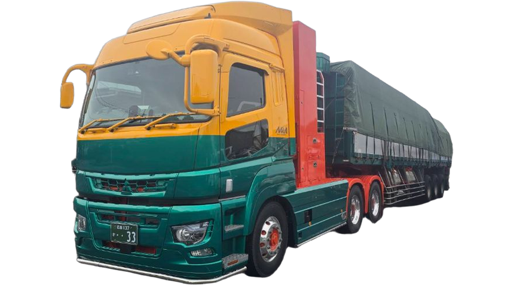
FLEET車 両 紹 介
物流を支える、
当社の主力車両をご紹介します。
16輪低床トレーラーから2t幌車、原木車・木材チップ車まで。 重量物・長尺物・木材・精密機械など、運ぶ荷物に合わせた車両を自社で保有しています。 すべての車両は、自社ピットで整備しています。
LINE UP
車 両 一 覧
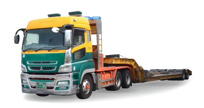
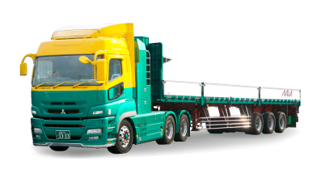
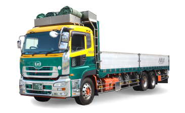
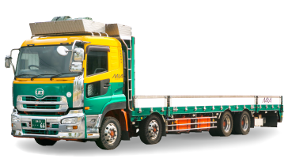
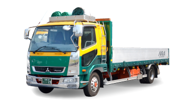
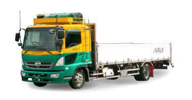
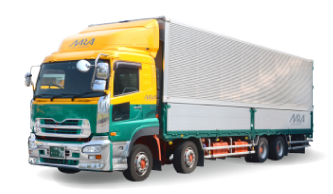
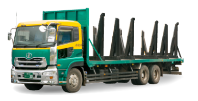
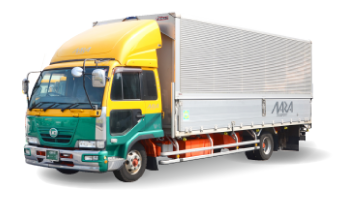
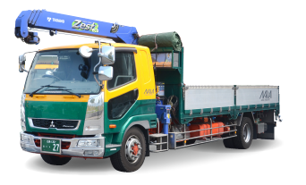
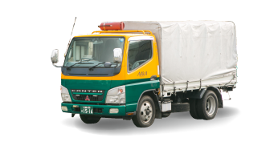
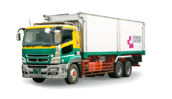
※ 掲載車両のほか、ご依頼内容に応じて最適な車両をご用意します。
IN-HOUSE PIT
自 社 ピ ッ ト に よ る 車 両 整 備
MAINTENANCESAFETY · SPEED · RELIABILITYディーラー任せにしない、
SAFETY · SPEED · RELIABILITYディーラー任せにしない、
責任ある車両管理。
安全・迅速・確実な運行を行うためには、私達のシステムを稼働させる車両が不可欠であり、お客様の大切な品物とその運び手の命を守るため、責任ある車両管理が重要。そうした考えのもとに当社は、自社ピットによる車両整備を行っています。ディーラー任せではなく、整備士とドライバーが一緒にメンテナンスを行うことで、車両に対する愛着やいたわりや労いの気持ちも一層深まります。
また一方で、日頃からドライバーも車両整備にしっかりと携わることで万が一の車両トラブルにもその場で迅速に対応する能力を身につけることができます。自社ピット導入は、車両を単なる仕事道具として捉えずに、お客様の大切な品物を運ぶ担い手として、また、自分達の命も運ぶパートナーとして大切に扱うことは従業員の意識改革にも効果を発揮しています。
01
自社ピットで
車両を整備
02
整備士とドライバーが
一緒にメンテナンス
03
車両トラブルに
その場で対応
IN-HOUSE PIT
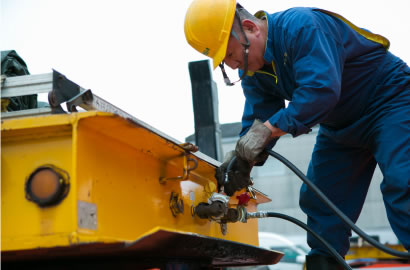
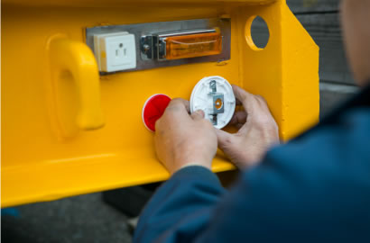